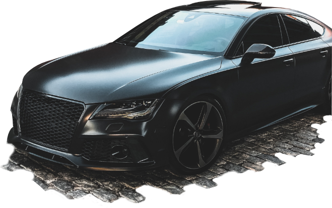

EL MEJOR TALLER EN LA GRAN CARACAS
QUE ESPERAS PARA VISITARNOS !
Automotriz BGMQ se especializa en la reparación y servicio de vehículos de marca Chevrolet, Ford, GM, Chrysler, Jeep y otras marcas Americanas. Estamos ubicado en Altamira, Caracas y abrimos los 7 días de la semana.
Nuestro equipo profesional de mecánicos te llevaran por todos los pasos para lograr que tu vehículo se encuentre siempre en su más óptimo funcionamiento


Ubicados en:
Calle El Dorado, Cruce con Av. Sur, Galpón Nº. 3-15, Altamira, Caracas
Contactanos a:
tlf: 0412 123-4567
fax: 800 431-8132
Escribenos a:
contacto@BGMQ.com
En nuestro taller nos caracterizamos por tener un equipo altamente cualificado y la utilización de las últimas tecnologías en materia de equipamiento. Todo ello con el objetivo de ofrecer a nuestros clientes el mejor de los servicios posible para dar respuesta a las necesidades de sus vehículos.
Lo más importante, para nosotros, es transmitir confianza, seguridad, garantías y que el cliente tenga toda la información necesaria antes, durante y tras la reparación. Es por ello que realizamos presupuestos adaptados a las nuevas tecnologías y los comunicamos a nuestros clientes, por vía telefónica, por e-mail, o por Whatsapp.